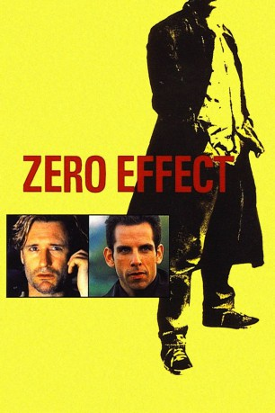
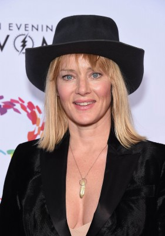

#3509 Zero Effect
 gesehen am 24.04.2016
gesehen am 24.04.2016
 
 IMDB-Wertung: 7.0 / 10
IMDB-Wertung: 7.0 / 10  Metascore: 0
Metascore: 0 
Wie es sich für einen genialen Verbrechensbekämpfer gehört, ist Privatdetektiv Daryl Zero exzentrischer als seine Mitmenschen. Er ist egoman, komponiert scheußliche Musik und kommuniziert mit der Außenwelt nur über seinen Assistenten Steve Arlo. Doch dann nimmt er den Erpressungsfall des Millionärs Stark an und muß sich für die Ermittlungen sogar unter Menschen begeben. So lernt er die ebenso attraktive wie geheimnisvolle Gloria kennen - eine Bekanntschaft, die ihm noch leid tun soll...
Jahr: 1998
Dauer: 111 Minuten
FSK: 12
Land: USA Studio: Warner Bros.Tonspuren:
Untertitel:
Auflösung: 1080p (1920x1080) Größe: 4321 MB
Genre: Thriller, Drama, Komödie, Krimi, Mystery
Regisseur: Jake Kasdan
Drehbuch: Robert Houston
Soundtrack:
Darsteller:
 Bill Pullman als Daryl Zero
Bill Pullman als Daryl Zero Ben Stiller als Steve Arlo
Ben Stiller als Steve Arlo Ryan O'Neal als Gregory Stark
Ryan O'Neal als Gregory Stark Kim Dickens als Gloria Sullivan
Kim Dickens als Gloria Sullivan-  Angela Featherstone als Jess
 Hugh Ross als Bill
Hugh Ross als Bill Matt O'Toole als Kragan Vincent
Matt O'Toole als Kragan Vincent- J.W. Crawford als Convention Employee
 Robert Blanche als Paramedic #1
Robert Blanche als Paramedic #1- Margot Demeter als Clarissa Devereau
- Jake Kasdan als Bank Teller , uncredited
- Bill Kelley als Man in Bathroom , uncredited
- Geno Romo als Basketball Player , uncredited
- Sarah DeVincentis als Daisy
- Michele Mariana als Maid
- Robert Katims als Gerald Auerbach
- Tyrone Henry als Staffer #1
- Aleta Barthell als Staffer #2
- Tapp Watkins als Firefighter
- Wendy Westerwelle als Motel Clerk
- Lauren Hasson als Little Kid
- Daniel Pershing als Rahim
- David Doty als Officer Hagans
- Fred Parnes als Chuck
- Luisa Sermol als Waitress
- Marvin LaRoy Sanders als Astronomer #1
- Doug Baldwin als Astronomer #2
- Galen Schrick als Man with Bag , uncredited
Datei: X:\1998\Zero Effect (1998, FSK12, 1920x1080).mkv seit 20.04.2016
Festplatte: HD 1996-2002
 Es gibt insgesamt 86 Filme in der Gruppe '1998'
Es gibt insgesamt 86 Filme in der Gruppe '1998'